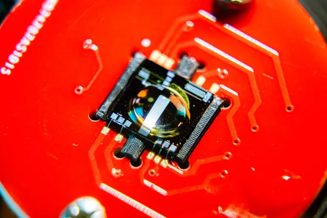

The four columns show the same bottom-left quarter of a 484 by 484 image. They retain the original encoded WebP response from the publisher. The first has no effect, the second has the authored gradient mask, the third has the authored dark gradient overlay, and the fourth combines both effects. The image size, object fitting and fractional vertical paint offset match the homepage. These words remain outside the document capture to satisfy the full-uBlock guest-page reference readiness check. The four columns show the same bottom-left quarter of a 484 by 484 image. They retain the original encoded WebP response from the publisher. The first has no effect, the second has the authored gradient mask, the third has the authored dark gradient overlay, and the fourth combines both effects. The image size, object fitting and fractional vertical paint offset match the homepage. These words remain outside the document capture to satisfy the full-uBlock guest-page reference readiness check. The four columns show the same bottom-left quarter of a 484 by 484 image. They retain the original encoded WebP response from the publisher.